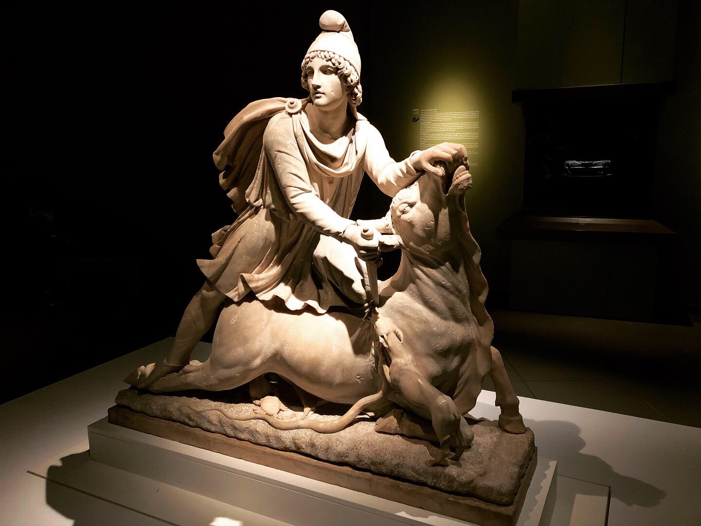
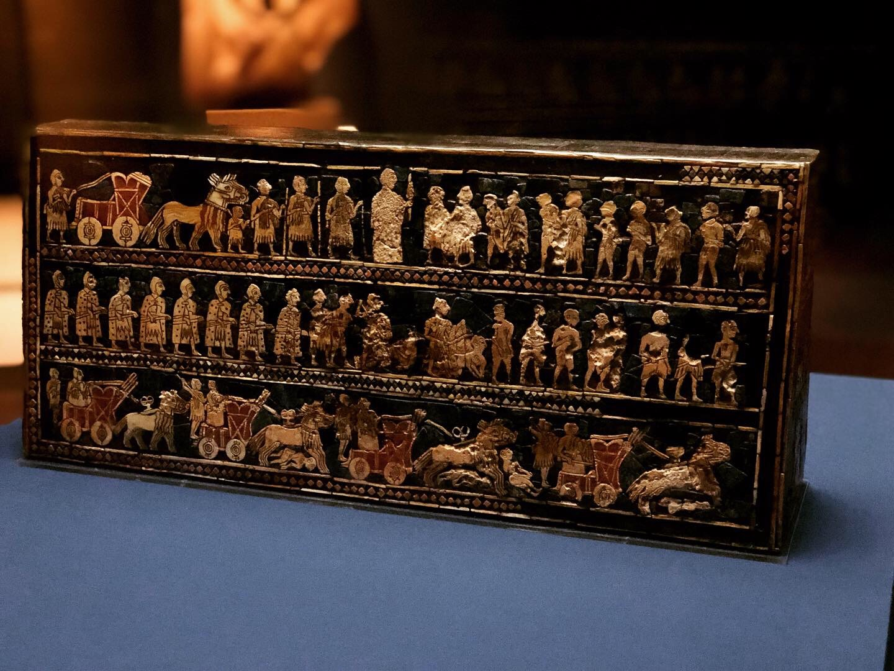

About Argus Tribe
In the major branch of Greek mythology, Argus, or Argos Panoptes is a many-eyed giant. In fact, we were servants of Hera, the wife of Zeus. And we served our Godness with a gift of wakeful alertness, which makes us the perfect guardians. So we have different names like watchers or angels in the many works of literature. Some of our stories lead to a game named Assassin's Creed.
 
After Ragnarök , the events in
which ancient gods ascended to their thrones in constellations in the sky, we live with humans and
help their civilization in many forms. Our ancestors planted the apple tree beneath which
Sir Newton established the
foundation of
classical mechanics. Also, they patronized many
Renaissance artists, like Piero da
Vinci, Michelangelo,and Raffaello . Our whisper gave Albert Einstein a
clue to think of the formula of E = mc2, which lead to
the revolution of energy.
If your want to know more about our Argus Community , please visit our home page ArgusHome.